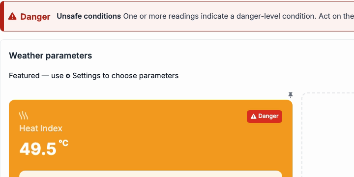
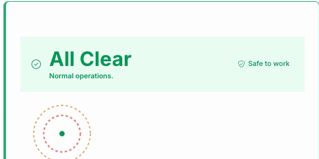

RELEASE · OCTOBER 2026
Connected
Environment 1.0
The home for everything environmental on site.
Weather Station
Lightning
Gas
One product for everything environmental on a site. Weather Station, Lightning and Gas are in it today, on one platform with one menu and header. Each project switches on only the products it uses. Going forward, new environment products go under it (direction, no dates).
Weather Station

A verdict, in words, and the steps to take, in priority order.
A heat card with work, rest and water. Offline stations are named.
Reports, and a Site Safety Policy with 30 day charts.
Lightning

A backup: the site's cabinet lights and sounder come first.
Only green is safe to work. Alert distances on a map.
Alarm history with CSV export. Wallboard and phone views.
Gas

Overview, detectors and compliance limits.
A silent detector is named, and the status reads Check.
Acknowledge and close alerts: recorded in WakeCap only.
One platform behind them. Each project switches on only what it uses (Settings, Connected Products).
Good to know
Lightning is a backup, not the alarm. Cabinet lights and sounder first.
Gas acknowledge and close are recorded in WakeCap only, not sent to the gas vendor.
Gas exposure and compliance figures: Not available yet.
The AI assistant is direction only. No assistant runs on any site.
Trends is in the menu marked Planned.
Find it, and watch
In the portal's left rail, click the sun-and-cloud icon: Connected Environment, if your project has it. Read the top line first.
Connected Environment overview
Weather Station
Lightning
Gas
Setup tour: explore, enable, configure
Internal · live production screens, 4 October 2026, names blurred. Numbers on screens are values at capture.